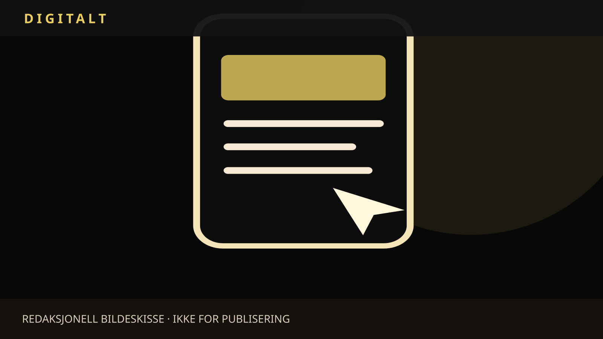

FEATURE / TEKNOLOGI / FORBRUKER
Appene som vil bestemme for deg – nå vil EU sette grenser
Nedtellingsklokker, vanskelige oppsigelser og tilbud som aldri tar slutt: Digitale tjenester kan gjøre det lettere å handle, men også lettere å bli lurt. EU-kommisjonen foreslår nå strengere regler for design som presser forbrukerne til valg de ellers ikke ville tatt.

Et nettsted forteller at bare to varer er igjen. En strømmetjeneste tilbyr en gratis prøveperiode, men gjør oppsigelsen vanskelig å finne. En app legger inn gjentatte varsler akkurat idet brukeren vil legge bort telefonen. Slike situasjoner kan være effektive salgsvirkemidler – og noen ganger manipulering. De er eksempler på det som gjerne kalles dark patterns, eller manipulerende design.
Kilder: EU-kommisjonen, 11. november 2026; EU-kommisjonen – Digital Fairness Act, forslag og dokumenter.
Onsdag 11. november la EU-kommisjonen fram et forslag til Digital Fairness Act. Det skal styrke forbrukervernet på digitale flater. Forslaget er ikke vedtatt lov. Det må fortsatt gjennom EUs ordinære lovprosess, og de endelige reglene kan bli endret.
Kilder: EU-kommisjonen, 11. november 2026; EU-kommisjonen – Digital Fairness Act, forslag og dokumenter.
Når grensesnittet er selgeren
I en fysisk butikk kan en selger forsøke å overtale deg. På en nettside kan samme press bygges inn i knapper, varsler og rekkefølgen på valgene. Den dyreste abonnementspakken kan være markert som standard. «Fortsett» kan være stor og tydelig, mens «nei takk» nesten forsvinner. Problemet oppstår når utformingen gjør det vanskeligere å velge fritt og informert.
Kilder: EU-kommisjonen – Digital Fairness Act, forslag og dokumenter.
Kommisjonen trekker særlig fram falske påstander om knapphet, uklare priser og abonnementer som er lette å starte, men vanskelige å avslutte. Forslaget vil blant annet gjøre det enklere å kansellere digitale avtaler og begrense at prøveperioder umerkelig blir til betalte abonnementer. Influensere skal også merke kommersielt innhold tydeligere.
Kilder: EU-kommisjonen, 11. november 2026.
En annen del handler om funksjoner som gjør det fristende å bruke mer tid eller penger enn planlagt. EU foreslår blant annet at forbrukere skal kunne slå av visse avhengighetsskapende funksjoner. Det er ikke det samme som et totalforbud mot sosiale medier, spilling eller reklame. Det er et forsøk på å skille mellom frivillig bruk og design som utnytter sårbarheter.
Kilder: EU-kommisjonen, 11. november 2026; EU-kommisjonen – Digital Fairness Act, forslag og dokumenter.
Et forslag med interesser på begge sider
Forbrukerorganisasjoner vil kunne argumentere for at digitale tjenester må ta større ansvar for måten de leder oss gjennom kjøp og abonnementer. Bedrifter vil kunne frykte uklare grenser mellom vanlig markedsføring og ulovlig påvirkning, og større kostnader ved nye krav. Hvordan begrepene blir definert i lovteksten, kan derfor bli like viktig som selve ambisjonen.
Kilder: EU-kommisjonen – Digital Fairness Act, forslag og dokumenter.
Kommisjonen viser til forbrukerundersøkelser som tyder på at nettkunder opplever flere problemer enn dem som handler fysisk. En slik sammenheng beviser ikke at hvert enkelt problem skyldes manipulerende design; den viser behovet for bedre kunnskap om hvor problemene oppstår. Hvilke regler som faktisk reduserer skade uten å forby legitim innovasjon, blir et sentralt spørsmål.
Kilder: EU-kommisjonen, 11. november 2026.
For leseren finnes allerede en praktisk kontroll: Se etter om prisen gjelder hele perioden, om avbestilling er like enkel som bestilling, og om en melding om «siste sjanse» faktisk kan dokumenteres. EU-forslaget bygger på en større idé: At valgfrihet ikke bare avhenger av hvilke alternativer som finnes, men også av hvordan de blir presentert.
Kilder: EU-kommisjonen – Digital Fairness Act, forslag og dokumenter.
Kilder og dokumentasjon
Denne teksten er basert på tilgjengelige dokumenter og redaktørstyrt dekning. Selvstendig intervjuer, hovedbilde, sekundærbilde ved behov og redaksjonell publiseringskontroll gjenstår.